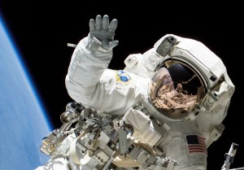
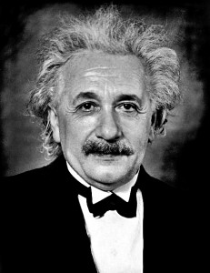

About Me

Born in Poland, obtained undergraduate degree from University of Oxford, St Hughs College . Since 2013 a PhD student at the Astronomy Department of the University of Washington, Seattle. In 2017 got married to a wonderful artist, Michael Shelby Edwards, who in 2018 gave birth to our firstborn, Stellamaris Danuta Suberlak.
Publications: ADS link
Research

A sixth year PhD candidate at the University of Washington, Seattle.
Enthusiastic about astrostatistics and data mining.
Scientific interests include quasars, and using their variability to classify and characterize.
Past work involves research on the LSST-Stack reprocessed SDSS Stripe 82 dataset,
testing Prototype Data Access Center as
part of the LSST Data Management System Science Team, testing the LSST-Stack
in regions of crowded stellar fields ,
analyzing time series data for Stripe 82
quasars from CRTS survey . Currently using Gaussian Processes to model Quasar
light curves as Damped Random Walk, combininig photometry
across various surveys (SDSS, CRTS, PTF, PS1, ZTF).
Teaching

Teaching: I served as a Teaching Assistant for Astronomy 101 and 150
courses taught to undergraduates at the University of Washington. Specifically,
I was an assistant for
Fall 2013, Fall 2015, Summer 2016, Autumn 2016 for Dr Ana Larson ;
Spring 2014, Spring 2016 for Dr Chris Laws;
Winter 2015, Winter 2016 for Dr Oliver Fraser;
Winter 2013, Summer 2014 for Dr Nicole Silvestri;
Spring 2015 for Dr Toby Smith
Contact
Email: suberlak 'at' uw.edu
Address: 3910 15th Ave NE, PAB C319, Astronomy Department, University of Washington, Seattle, WA